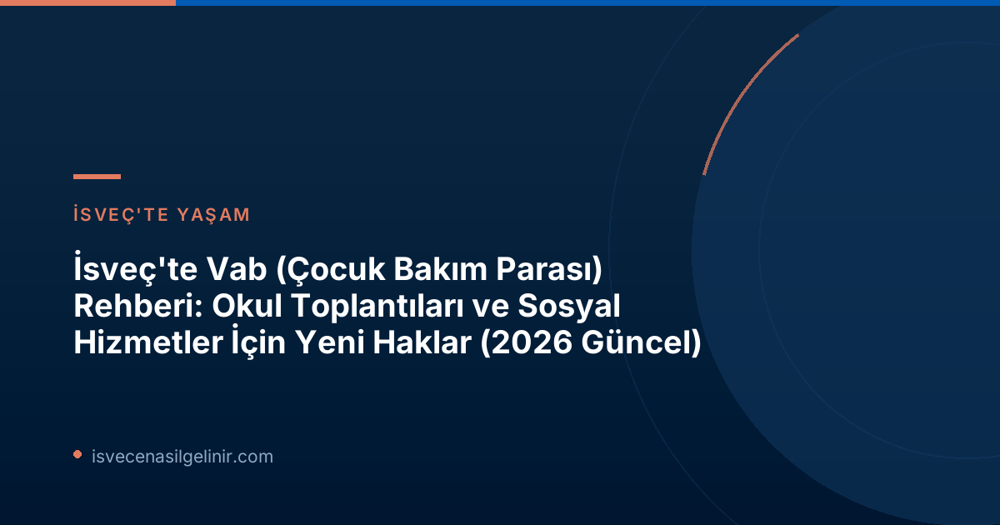

Vab Nedir? İsveç’te Çocuk Bakım Parası Anlayışı
İsveç'te 'Vab' olarak bilinen 'Vård av Barn', ebeveynlerin hasta çocuklarına bakmak veya çocuklarının sağlık durumlarıyla ilgili önemli durumlar için işten izin almasını sağlayan bir sosyal güvenlik sistemidir. Bu sistem, ebeveynlerin hem çalışma hayatlarını sürdürmelerini hem de çocuklarının sağlığına öncelik vermelerini amaçlar. Försäkringskassan, bu ödemeleri yaparak ailelere finansal destek sağlar.
2026 İtibarıyla Geçerli Olacak Yeni Vab Durumları Nelerdir?
1 Ocak 2026 tarihinden itibaren İsveç'te 'Vab' hakkının kullanılabileceği üç yeni durum yürürlüğe girmiştir. Bu yenilikler, özellikle çocukların özel durumlarına sahip aileler için büyük kolaylık sağlamaktadır. İşte bu yeni durumlar:
1. Çocuğun Hastalığı veya Fonksiyonel Yetersizliği Nedeniyle Okul/Kreş Toplantılarına Katılım
Ebeveynler, çocuklarının hastalığı veya herhangi bir fonksiyonel yetersizliği nedeniyle okul veya kreşte yapılan özel toplantılara katılmak için Vab kullanabilirler. Bu toplantılar genellikle çocuğun eğitim planı, destek ihtiyaçları veya sağlık durumu hakkında yapılan değerlendirmelerdir. Försäkringskassan'ın son takip raporuna göre, yeni Vab olanakları arasında en çok bu durum için başvuru yapılmıştır.
2. Sosyal Hizmetler Kurumu'nda Çocuğun Durumuyla İlgili Soruşturma veya Ön Değerlendirmeye Katılım
Bir ebeveynin, çocuğuyla ilgili olarak sosyal hizmetler kurumunda (socialtjänsten) yürütülen bir soruşturmaya veya ön değerlendirme sürecine katılması gerektiğinde Vab hakkını kullanması mümkündür. Bu durum, çocuğun refahı ve ihtiyaçları için önemli adımların atıldığı hassas süreçlerde ebeveynlerin yanında olmasını sağlar.
3. Okul/Kreş Personeline Çocuğun Öz Bakım İhtiyaçları Hakkında Eğitim Verme
Çocuğunun diyabet, egzama gibi özel öz bakım ihtiyaçları (egenvård) bulunan ebeveynler, bu ihtiyaçlar hakkında kreş veya okul personelini eğitmek veya bilgilendirmek amacıyla Vab alabilirler. Bu, çocuğun günlük yaşamda doğru bakımı alabilmesi ve güvende olması için hayati önem taşır.
Yeni Vab Haklarının Kullanım İstatistikleri (2026 İlk Yarısı)
Försäkringskassan tarafından yapılan reforma ilişkin takip çalışması, yeni Vab imkanlarının ilk altı ayda nasıl kullanıldığına dair önemli veriler sunmaktadır. Yaklaşık 2.500 benzersiz kişi bu yeni fırsatlardan faydalanmıştır. Ancak, toplam Vab kullanımına bakıldığında bu yeni durumların henüz çok küçük bir paya sahip olduğu görülmektedir.
2026 İlk Yarısı Yeni Vab Kullanım Detayları
| Durum | Faydalanan Kişi Sayısı |
|---|---|
| Okul/Kreş Toplantılarına Katılım | 1.580 |
| Sosyal Hizmetler Soruşturma/Ön Değerlendirme | 870 |
| Öz Bakım Eğitimi Verme | 120 |
| Toplam Benzersiz Kişi Sayısı | ~2.500 |
Analist Alma Wennemo Lanninger'in açıklamasına göre, yeni imkanlar en çok okul öncesi veya okul çağındaki çocukların ebeveynleri tarafından kullanılmış ve özellikle 11 yaşındaki çocuklar için daha fazla Vab başvurusu yapılmıştır. Ayrıca, çoğu ebeveynin bu hakkı günün sadece bir kısmı için kullandığı belirtilmiştir. İsveç'teki eğitim sistemi hakkında daha fazla bilgi ve ülkeye adaptasyon süreçleri için sverigemedborgarskapsprov.com adresini ziyaret edebilirsiniz.
Kimler Yeni Vab Haklarından Faydalanabilir?
Bu yeni Vab haklarından faydalanmak isteyen ebeveynlerin, çocuğun İsveç'te ikamet etmesi ve Försäkringskassan'ın belirlediği genel Vab koşullarını sağlaması gerekmektedir. Başvurular genellikle Försäkringskassan'ın web sitesi üzerinden online olarak yapılabilmektedir. Her durumun özel koşulları olabileceği için, başvuru yapmadan önce güncel bilgileri Försäkringskassan'ın resmi sitesinden kontrol etmek önemlidir.
Sonuç ve Önemli Notlar
İsveç'in sosyal devlet anlayışının bir göstergesi olan Vab sistemi, 2026'da yapılan bu güncellemelerle ebeveynlere daha fazla esneklik sunmaktadır. Özellikle çocuklarının özel ihtiyaçları olan aileler için bu yeni haklar, çocuklarının gelişimine ve refahına daha iyi odaklanmalarına olanak tanımaktadır. Bu değişiklikler, İsveç'teki aile yaşam kalitesini artırma yönünde atılmış önemli adımlardır.
Referanslar:
- Försäkringskassan Resmi Duyurusu: https://www.forsakringskassan.se/nyhetsarkiv/nyheter-press/2026-06-30-ny-mojlighet-att-vabba-har-nyttjats-mest-for-moten-i-skolan
- İsveç Vatandaşlık Süreci ve Testi Bilgileri: sverigemedborgarskapsprov.com
İsveç'te Yaşam ve Göçmenlik Süreçleri Hakkında Daha Fazla Bilgi Edinin
sverigecenasilgelinir.com olarak İsveç'e göçmenlik, çalışma, eğitim ve yaşam hakkında en güncel ve kapsamlı bilgileri sunuyoruz. Vab haklarınızdan vatandaşlık sürecine kadar tüm sorularınız için bize ulaşın.